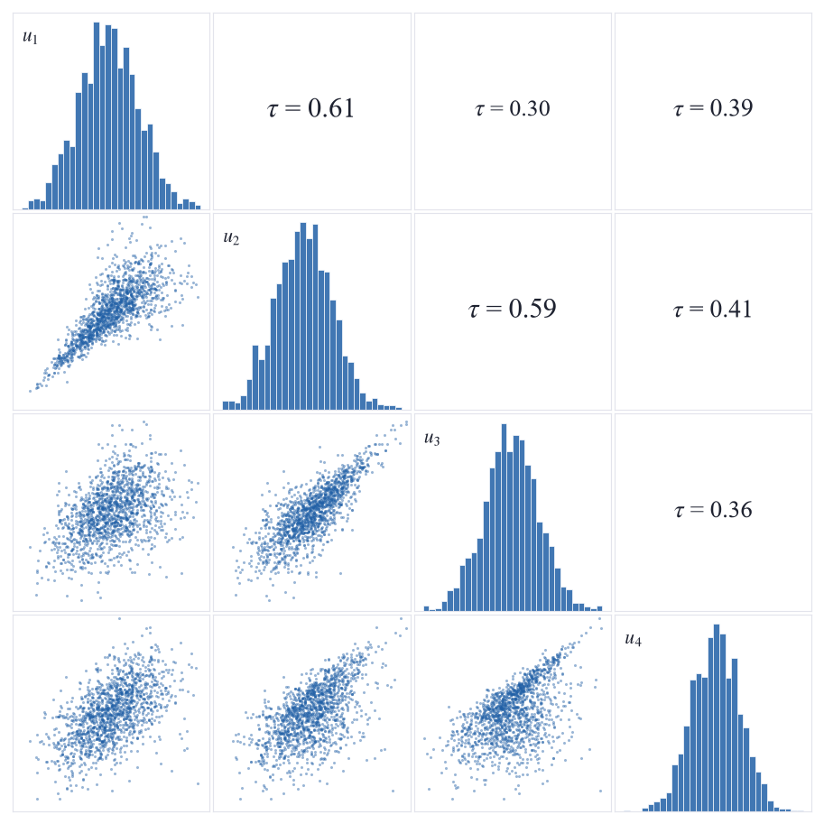
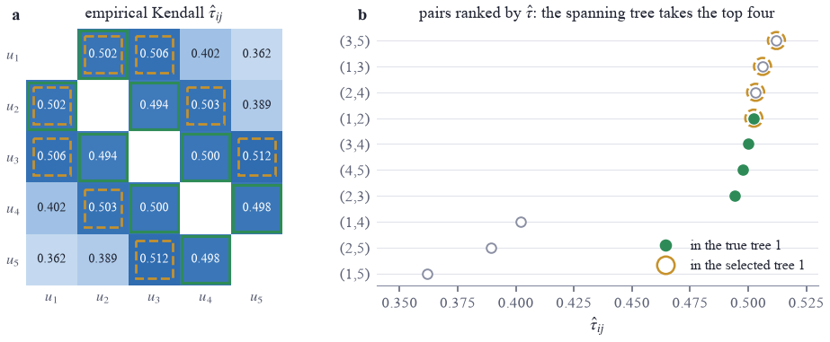
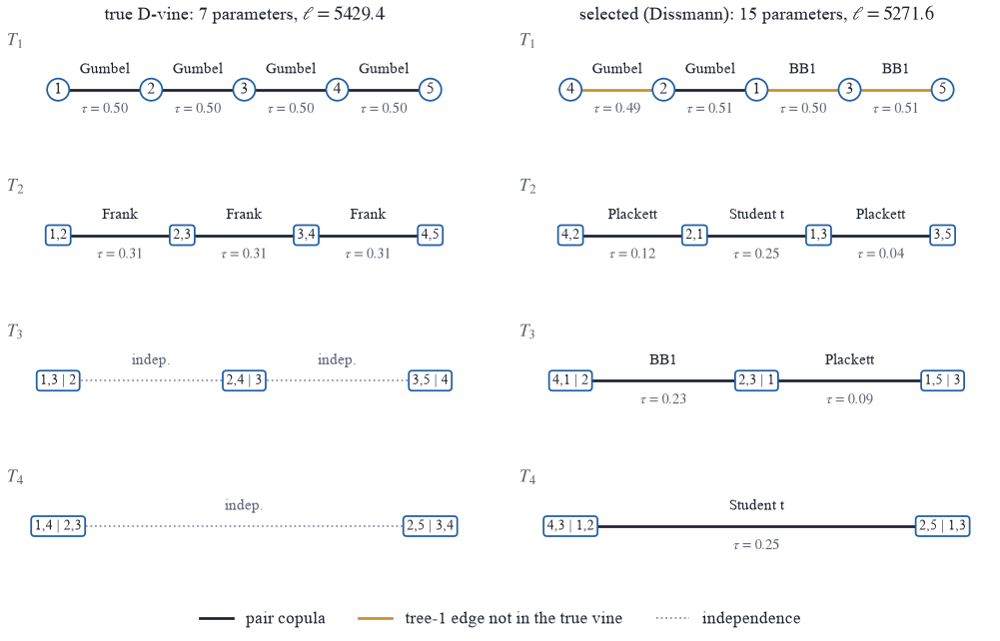

Vine copula workflow¶
Program: example/ex02_vine.f90, example/python/ex02_vine.py,
example/r/ex02_vine.R · Topics: fv_vinecop, set_dvine,
simulate, select (Dissmann's algorithm), loglik, npars, pdf, rosenblatt,
print, fv_controls%nthreads.
The program builds a five-dimensional D-vine by hand, draws 3000 observations from it, forgets the model, selects a new regular vine from the sample, and then uses the fitted model: its density, its Rosenblatt transform and new simulations.

Code¶
! ex02_vine -- a 5-dimensional vine copula: simulate from a known D-vine, select a new vine from
! the sample (structure, families, parameters), then density, Rosenblatt transform and simulation.
program ex02_vine
use fortvine_api
implicit none
integer, parameter :: dp = kind(1.0d0), n = 3000, d = 5
type(fv_vinecop) :: truth, vc
type(fv_controls) :: ctl
real(dp) :: u(n, d), w(n, d), dens(n), sim(10, d)
integer :: e, t
! a D-vine 1-2-3-4-5 with Gumbel pairs in tree 1 and Frank pairs in tree 2, independence above
call truth%set_dvine([1, 2, 3, 4, 5])
do e = 1, d - 1
truth%fam(e, 1) = FV_GUMBEL; truth%par(1, e, 1) = 2.0_dp
end do
do e = 1, d - 2
truth%fam(e, 2) = FV_FRANK; truth%par(1, e, 2) = 3.0_dp
end do
call truth%simulate(n, u, seed=42)
! select a regular vine: Dissmann's algorithm, all parametric families, BIC
ctl%nthreads = 4
call vc%select(u, ctl)
call vc%print()
print '(a,f12.2,a,i0)', 'log-likelihood:', vc%loglik(u), ' parameters:', vc%npars()
! density, Rosenblatt transform (independent uniforms if the model is right) and new samples
call vc%pdf(u, dens)
call vc%rosenblatt(u, w)
print '(a,f8.4)', 'Kendall tau of the first two Rosenblatt columns (should be ~0):', &
fv_kendall_tau(w(:, 1), w(:, 2))
call vc%simulate(10, sim, seed=7)
print '(a,5f8.4)', 'first simulated row:', sim(1, :)
do t = 1, 2
print '(a,i0,a,*(1x,a))', 'tree ', t, ' families:', (trim(fv_fam_name(vc%fam(e, t))), e = 1, d - t)
end do
end program ex02_vine
"""ex02_vine -- a 5-dimensional vine copula: simulate from a known D-vine, select a new vine from
the sample (structure, families, parameters), then density, Rosenblatt transform and simulation.
The Python version of example/ex02_vine.f90 (pip install ./python).
"""
import numpy as np
import fortvine as fv
n, d = 3000, 5
# a D-vine 1-2-3-4-5 with Gumbel pairs in tree 1 and Frank pairs in tree 2, independence above
truth = fv.Vinecop().set_dvine([1, 2, 3, 4, 5])
for e in range(d - 1):
truth.set_pair_copula(0, e, fv.Bicop("gumbel", 0, [2.0]))
for e in range(d - 2):
truth.set_pair_copula(1, e, fv.Bicop("frank", 0, [3.0]))
u = truth.simulate(n, seed=42)
# select a regular vine: Dissmann's algorithm, all parametric families, BIC
vc = fv.Vinecop.from_data(u, num_threads=4)
print(vc)
print(f"log-likelihood:{vc.loglik(u):12.2f} parameters:{vc.npars}")
# density, Rosenblatt transform (independent uniforms if the model is right) and new samples
dens = vc.pdf(u)
w = vc.rosenblatt(u)
print("Kendall tau of the first two Rosenblatt columns (should be ~0):"
f"{fv.kendall_tau(w[:, 0], w[:, 1]):8.4f}")
sim = vc.simulate(10, seed=7)
print("first simulated row:" + "".join(f"{x:8.4f}" for x in sim[0]))
for t in range(2):
print(f"tree {t + 1} families: " + " ".join(vc.families[t]))
# ex02_vine -- a 5-dimensional vine copula: simulate from a known D-vine, select a new vine from
# the sample (structure, families, parameters), then density, Rosenblatt transform and simulation.
# The R version of example/ex02_vine.f90 (R CMD INSTALL r).
library(fortvine)
n <- 3000; d <- 5
# a D-vine 1-2-3-4-5 with Gumbel pairs in tree 1 and Frank pairs in tree 2, independence above
pcs <- list(rep(list(bicop_dist("gumbel", 0, 2)), d - 1),
rep(list(bicop_dist("frank", 0, 3)), d - 2))
truth <- vinecop_dist(pcs, dvine_structure(1:d))
set.seed(42)
u <- rvinecop(n, truth)
# select a regular vine: Dissmann's algorithm, all parametric families, BIC
vc <- vinecop(u, family_set = "all", selcrit = "bic", cores = 4)
print(vc)
cat(sprintf("log-likelihood:%12.2f parameters:%d\n", sum(log(dvinecop(u, vc))), vc$npars))
# density, Rosenblatt transform (independent uniforms if the model is right) and new samples
dens <- dvinecop(u, vc)
w <- rosenblatt(u, vc)
cat(sprintf("Kendall tau of the first two Rosenblatt columns (should be ~0):%8.4f\n",
cor(w[, 1], w[, 2], method = "kendall")))
set.seed(7)
sim <- rvinecop(10, vc)
cat("first simulated row:", sprintf("%8.4f", sim[1, ]), "\n", sep = "")
for (t in 1:2)
cat("tree ", t, " families: ",
paste(vapply(vc$pair_copulas[[t]], function(b) b$family, ""), collapse = " "), "\n", sep = "")
Output¶
fortvine vine copula: d = 5, trunc = 4
order: 4 2 1 3 5
tree 1 edge 1: gumbel rot 0 par 1.9794E+00 0.0000E+00 0.0000E+00
tree 1 edge 2: gumbel rot 0 par 2.0272E+00 0.0000E+00 0.0000E+00
tree 1 edge 3: bb1 rot 0 par 9.5591E-02 1.9079E+00 0.0000E+00
tree 1 edge 4: bb1 rot 0 par 1.2148E-01 1.9325E+00 0.0000E+00
tree 2 edge 1: plackett rot 0 par 1.7121E+00 0.0000E+00 0.0000E+00
tree 2 edge 2: student rot 0 par 3.7896E-01 8.0422E+00 0.0000E+00
tree 2 edge 3: plackett rot 0 par 1.2170E+00 0.0000E+00 0.0000E+00
tree 3 edge 1: bb1 rot 0 par 1.0692E-01 1.2345E+00 0.0000E+00
tree 3 edge 2: plackett rot 0 par 1.4716E+00 0.0000E+00 0.0000E+00
tree 4 edge 1: student rot 0 par 3.8256E-01 1.3891E+01 0.0000E+00
log-likelihood: 5271.62 parameters:15
Kendall tau of the first two Rosenblatt columns (should be ~0): -0.0145
first simulated row: 0.2060 0.0264 0.0755 0.1306 0.5556
tree 1 families: gumbel gumbel bb1 bb1
tree 2 families: plackett student plackett
fortvine vine copula: d = 5, trunc = 4
order: 1 2 3 4 5
tree 1 edge 1: gumbel rot 0 par 2.0235
tree 1 edge 2: bb1 rot 0 par 0.1361 1.9229
tree 1 edge 3: bb1 rot 0 par 0.1043 1.9814
tree 1 edge 4: galambos rot 0 par 1.3295
tree 2 edge 1: plackett rot 0 par 1.6967
tree 2 edge 2: amh rot 0 par 0.4955
tree 2 edge 3: student rot 0 par 0.3844 10.1893
tree 3 edge 1: amh rot 0 par 0.4029
tree 3 edge 2: student rot 0 par 0.3588 9.2346
tree 4 edge 1: plackett rot 0 par 2.8453
log-likelihood: 5572.92 parameters:14
Kendall tau of the first two Rosenblatt columns (should be ~0): -0.0104
first simulated row: 0.6159 0.6475 0.4473 0.1721 0.3002
tree 1 families: gumbel bb1 bb1 galambos
tree 2 families: plackett amh student
Vine copula ('vinecop_dist'): d = 5, trunc_lvl = 4, order = 4 2 1 3 5
npars = 13, loglik = 5027.01 (n = 3000)
tree edge conditioned conditioning family rotation parameters
1 1 4, 2 gumbel 0 2.007
1 2 2, 1 galambos 0 1.271
1 3 1, 3 galambos 0 1.255
1 4 3, 5 gumbel 0 1.978
2 1 4, 1 2 amh 0 0.4485
2 2 2, 3 1 bb9 0 1.442, 16.7
2 3 1, 5 3 fgm 0 0.2236
3 1 4, 3 2, 1 bb1 0 0.1337, 1.206
3 2 2, 5 1, 3 plackett 0 1.535
4 1 4, 5 2, 1, 3 student 0 0.315, 11.17
log-likelihood: 5027.01 parameters:13
Kendall tau of the first two Rosenblatt columns (should be ~0): -0.0040
first simulated row: 0.9710 0.7986 0.7966 0.8175 0.7995
tree 1 families: gumbel galambos galambos gumbel
tree 2 families: amh bb9 fgm
Each sample is drawn with a fixed seed (seed=42 in Fortran and Python, set.seed(42) in
R), so each output is reproducible. The three languages draw different uniforms, though, so
the three samples differ, and with them the selected vines. The walk-through discusses the
Fortran run. The R sample leads to the same first tree, the path 4-2-1-3-5; on the Python
sample it is yet another path, 1-2-4-5-3. Neither is the true path 1-2-3-4-5, for the
reason explained below.
Walk-through¶
Building a vine by hand¶
set_dvine(order) allocates a vine for d = size(order) variables with the D-vine
(path) structure along order, and every pair copula set to independence. Edge e of tree
t is then configured through fam(e, t), rot(e, t) and par(1:3, e, t). In Python the
same arrays are indexed [t, e] from 0 (vc.fam[t - 1, e - 1]), or set one Bicop at a time
with set_pair_copula; in R a vine is built from a list of trees, each a list of
bicop_dist objects, and a structure from dvine_structure(). In this
D-vine, tree 1 holds the pairs \((1,2), (2,3), (3,4), (4,5)\), each a Gumbel copula with
\(\theta = 2\) (\(\tau = 0.5\), upper tail dependence \(\lambda_U = 2 - \sqrt 2 \approx 0.59\));
tree 2 holds \((1,3 \mid 2)\), \((2,4 \mid 3)\), \((3,5 \mid 4)\), Frank copulas with
\(\theta = 3\) (\(\tau \approx 0.31\)). Trees 3 and 4 stay independent, so the truth has
\(4 + 3 = 7\) parameters.
simulate(n, u, seed=42) fills u(n, d) by applying the inverse Rosenblatt transform to
uniforms drawn from a generator seeded with 42.
Selecting a vine¶
vc has no structure yet, so select runs the full Dissmann et al. (2013) algorithm: tree
by tree it builds a maximum spanning tree on \(|\hat\tau|\), then selects family, rotation
and parameters for every edge by BIC among the default 23 parametric families, and
computes the conditional pseudo-observations for the next tree. Independent edges are
fitted in parallel on the requested 4 threads. (The Python and R functions use one thread
unless num_threads or cores says otherwise; the Fortran default is half the logical
CPUs.)
Why the selected vine differs from the truth¶
The selected model has 15 parameters and log-likelihood 5271.6, although the true model
reaches 5429.4 with 7. The reason is visible in the sample's Kendall tau matrix
(fv_tau_mat(u, tm)):
1.000 0.502 0.506 0.402 0.362
0.502 1.000 0.494 0.503 0.389
0.506 0.494 1.000 0.500 0.512
0.402 0.503 0.500 1.000 0.498
0.362 0.389 0.512 0.498 1.000
The Frank copulas in tree 2 add so much dependence between second neighbours that \(\hat\tau_{13} = 0.506\) and \(\hat\tau_{35} = 0.512\) exceed the true tree-1 pair \(\hat\tau_{23} = 0.494\). The maximum spanning tree takes the stronger pairs, the first tree is no longer the path 1-2-3-4-5, and higher trees have to mop up the dependence that the first tree misplaced (hence BB1, Plackett and Student copulas in trees 2-4 instead of Frank and independence). Greedy tree selection is a heuristic; it is very good when the strongest dependence really sits in the first tree and can be fooled otherwise.


When the structure is known, fixing it avoids the problem. With
fortvine selects Gumbel in all four tree-1 edges (\(\hat\theta\) from 1.98 to 2.03), Frank in
all three tree-2 edges (\(\hat\theta\) from 2.90 to 3.06), independence above, 7 parameters
and log-likelihood 5431.45, slightly above the truth's 5429.45 as a maximum-likelihood fit
should be. (The fitted vine is stored with the order reversed, 5 4 3 2 1, which describes
the same D-vine.)
Using the fitted model¶
loglik(u)is \(\sum_i \log c(u_i)\) andnpars()the number of parameters, the two ingredients of an information criterion (\(\mathrm{BIC} = -2 \cdot 5271.6 + 15 \log 3000\)).pdf(u, dens)returns the vine density at every row; it is a product of 10 pair-copula densities evaluated along the trees (computed as a sum of logs).rosenblatt(u, w)maps the data to what should be independent uniforms if the model is right. The Kendall tau between the first two transformed columns, \(-0.0145\), is well within the sampling noise of \(\pm 0.012\) (one standard error at \(n = 3000\)), as expected since the selected vine fits the data well even with the "wrong" structure.simulate(10, sim, seed=7)draws ten new rows from the fitted model.
The fam array is indexed (edge, tree), so the last loop prints the families of tree 1
and tree 2 by name with fv_fam_name (in Python vc.families[t], in R the family of each
bicop_dist in vc$pair_copulas[[t]]).
Variations¶
ctl%select_trunc = .true.lets the mBICv choose a truncation level;ctl%trunc_lvl = 2truncates after tree 2 by fiat.ctl%tree_crit = FV_TREE_RHO(orFV_TREE_HOEFFD,FV_TREE_XI,FV_TREE_MI, ...) changes the edge weights of the spanning trees;ctl%tree_algo = FV_KRUSKALthe algorithm.vc%matrix()returns the R-vine matrix in the original variable labels, the format used by vinecopulib and VineCopula.
ctl%select_trunc = .true. ! mBICv chooses the truncation level
ctl%trunc_lvl = 2 ! or: stop after tree 2
ctl%tree_crit = FV_TREE_RHO ! Spearman's rho as edge weight
ctl%tree_algo = FV_KRUSKAL ! Kruskal instead of Prim
call vc%select(u, ctl, fixed=.false.)
m = vc%matrix() ! R-vine matrix, original labels
See Vine copulas and Fitting and selection.